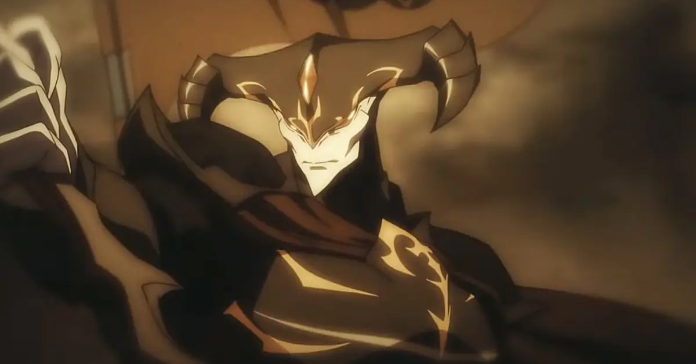
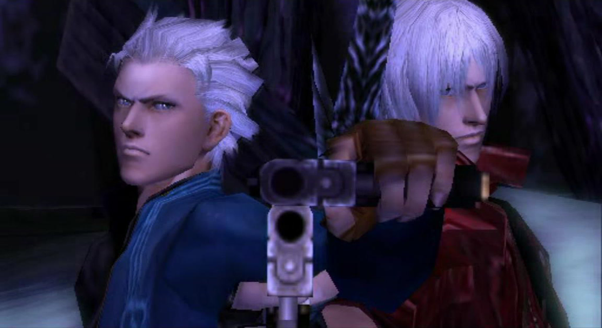
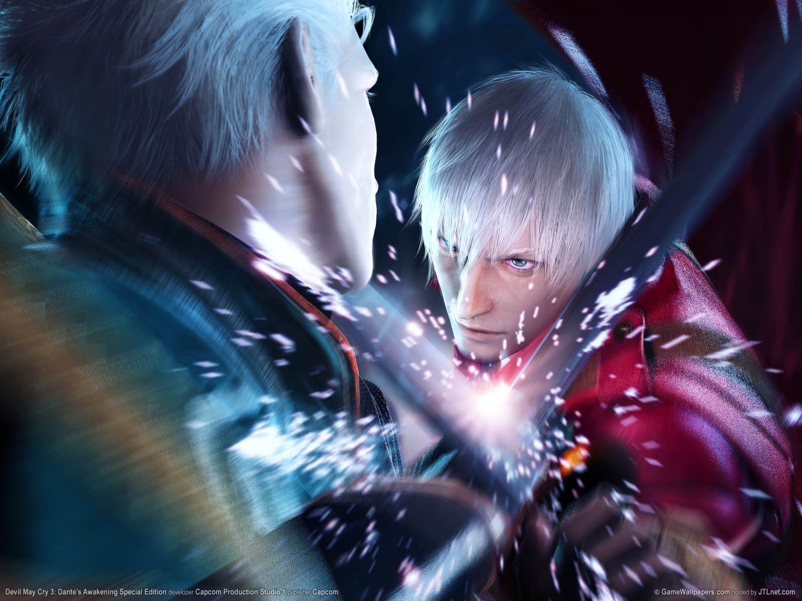
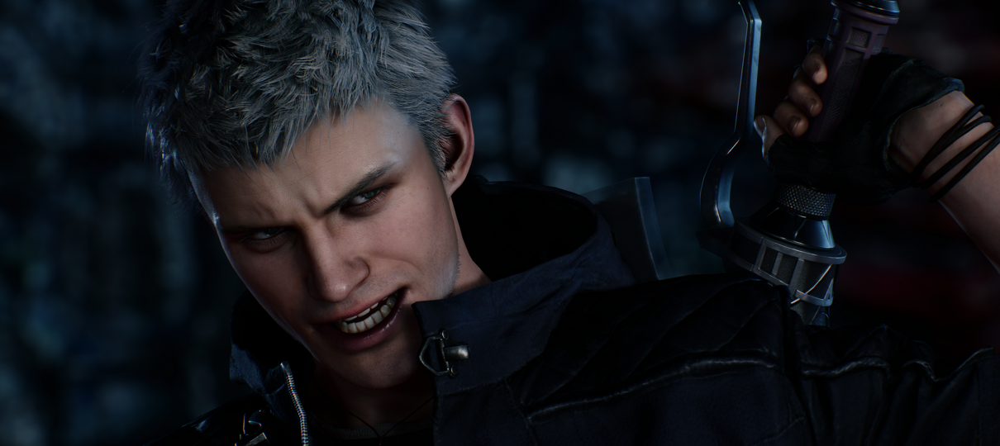
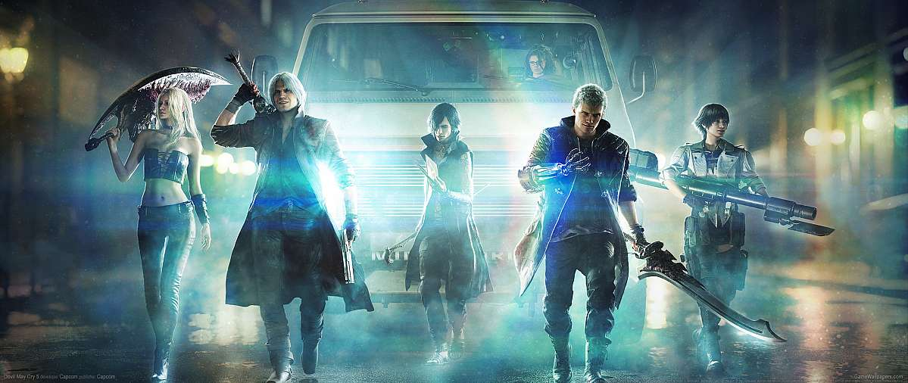

Há milhares de anos, o demônio Sparda despertou para a justiça e selou o mundo demoníaco para proteger a humanidade.

Dante e Vergil, filhos de Sparda,os irmãos seguiram caminhos diferentes após a morte de sua mãe, herdam seus poderes e enfrentam desafios para proteger o mundo humano.

Dante e Vergil enfrentam seu destino em uma batalha épica que determinará o futuro do mundo humano e demoníaco.

Nero surge como uma nova geração de caçadores de demônios.

Em Devil May Cry 5, Dante, Vergil e Nero enfrentam a ameaça de Urizen e o colapso entre os mundos humano e demoníaco. Nero desperta seu verdadeiro poder para impedir o confronto definitivo entre os irmãos.